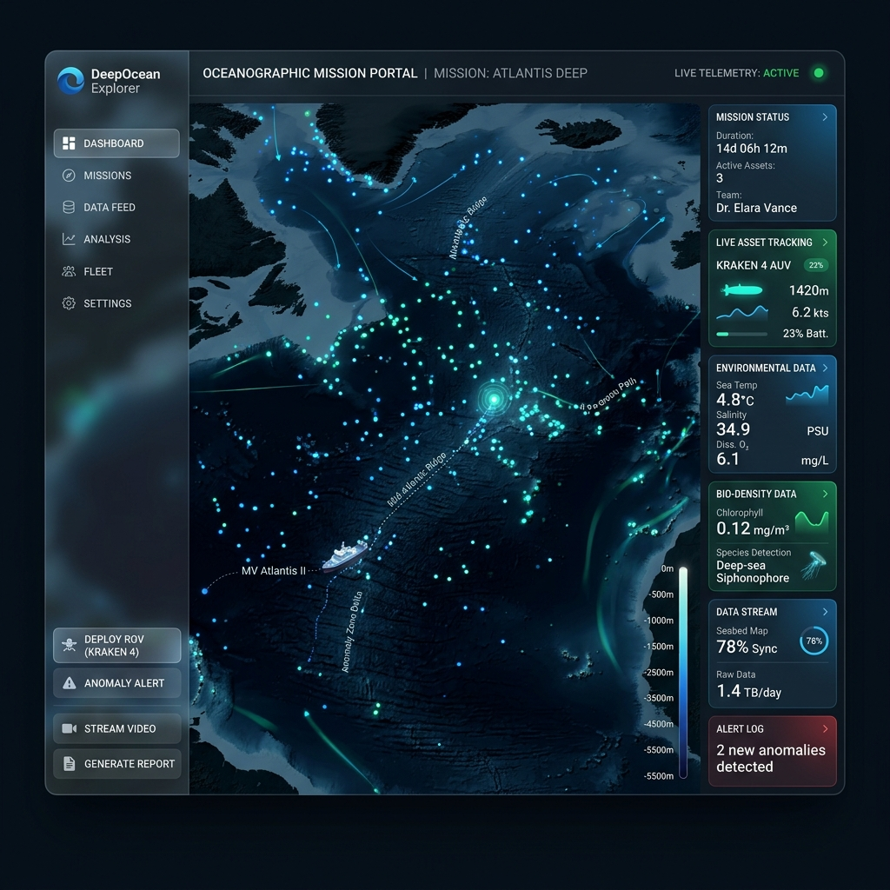
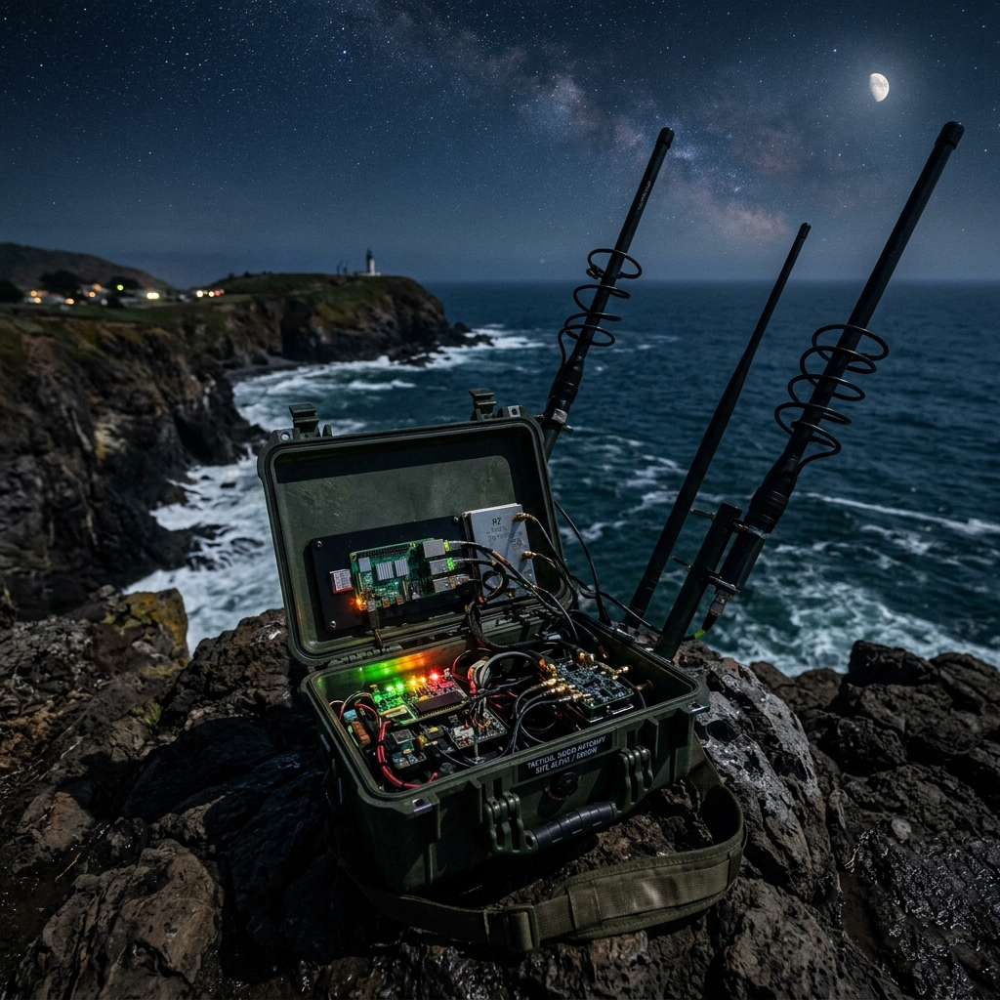
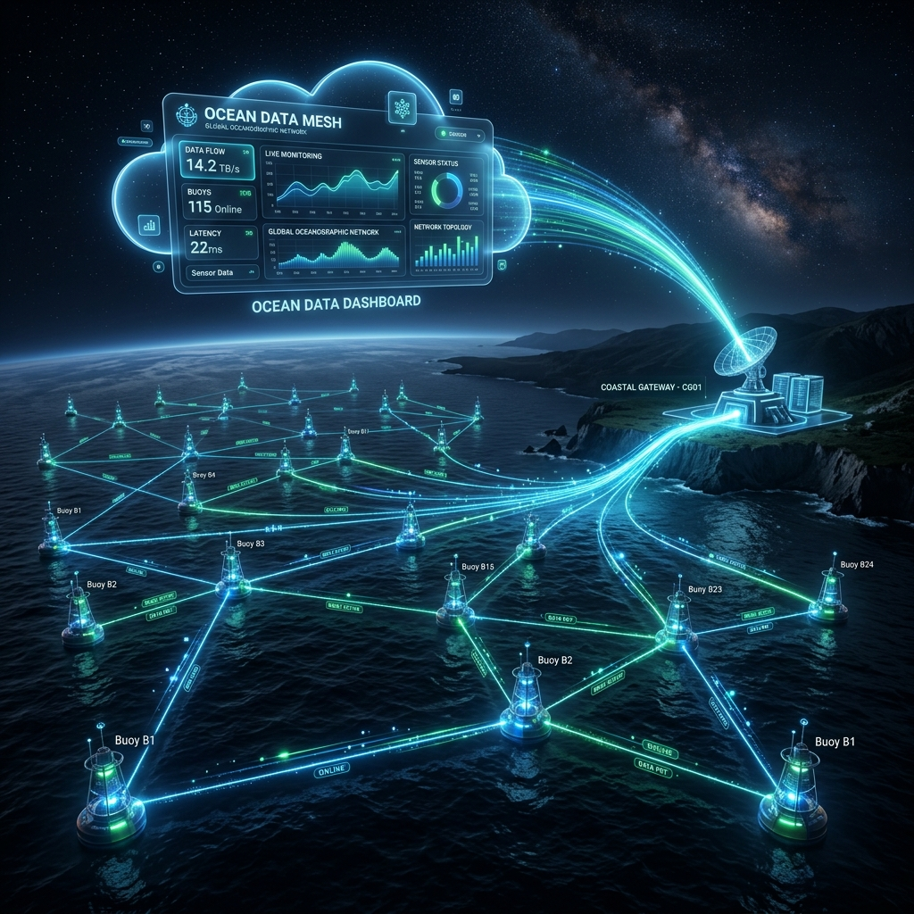
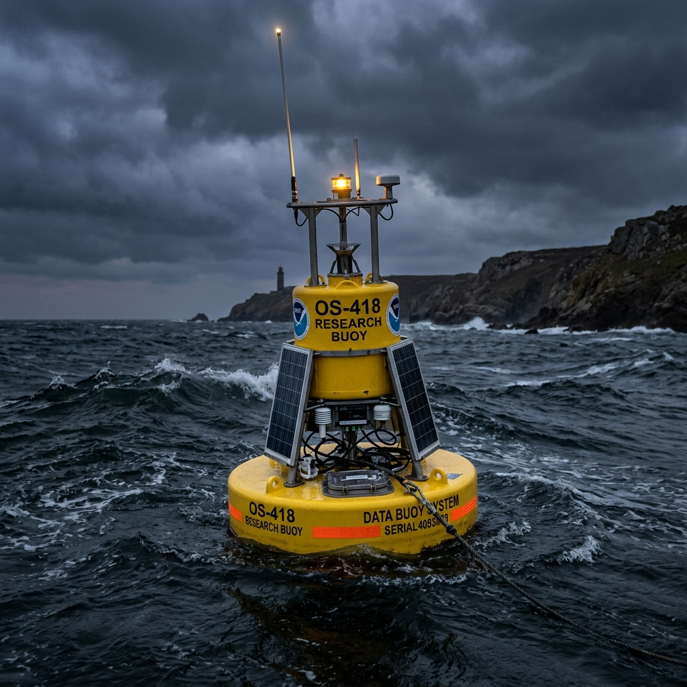

We depend on an ocean we barely understand.
The ocean drives our global climate, produces half the oxygen we breathe, and underpins trillions of dollars in the global economy. Yet, over 80% of the ocean remains unmapped, unobserved, and unexplored. As anthropogenic impacts accelerate—from rapid coral bleaching to shifting thermohalines and severe coastal storm surges—the data clearly dictates that we need to take a much closer look. But observing the ocean is astronomically expensive; satellite uplinks cost thousands per node, and cellular networks die just 10 miles offshore. We are flying blind during a critical environmental shift.
The Economic Paradigm ShiftScalable data for a changing planet.
OMEGA is a fundamental paradigm shift in maritime telemetry and environmental economics. By replacing expensive satellite links with ultra-long-range Sub-GHz LoRa modulation and a decentralized Delay Tolerant Network (DTN), OMEGA democratizes marine sensing. It allows researchers, conservationists, and coastal economies to blanket entire coastlines and archipelagos with resilient, self-healing sensor nodes at a fraction of traditional costs.
This hyper-dense, real-time data enables unprecedented capabilities:
Climate Science: Real-time, continuous thermal mapping to predict and monitor coral reef bleaching events.
Ecological Preservation: Monitoring shifting salinity, dissolved oxygen, and acoustic pollution in critical marine habitats.
Coastal Economies: Protecting local fisheries, aquaculture, and coastal infrastructure by live-streaming extreme weather and tidal anomalies.
A War Against Physics.
Deploying silicon and lithium into the ocean is an act of war against physics. Saltwater corrodes hardware, rolling waves physically block RF signals, and winter storms obliterate solar charging budgets. Standard IoT frameworks instantly collapse in this environment. To survive, OMEGA relies on extreme, bare-metal engineering:
15µA Deep Sleep
Edge nodes mathematically budget incoming solar joules, physically cutting power rails to drop into 15µA deep-sleep cycles to survive 14-hour winter nights.
Binary TLV Frames
JSON is too heavy for the ocean. OMEGA crushes 283B payloads into highly dense 84B Custom Binary TLV frames, vastly increasing network throughput.
SQLite WAL Routing
The FastAPI backend writes asynchronously to a SQLite WAL database to prevent total system lockups during massive RF data influxes from the physical mesh.
The 4-Layer Stack.
System Modules.

Mission Portal
WebGL mapping dashboard, live interactive telemetry tiles, and real-time operations overview for the entire mesh fleet.

Gateway Firmware
The core Python edge router handling HTTP ingest, SQLite WAL normalization, and FastAPI routing.

Relay Firmware
Delay Tolerant Network (DTN) overlay using Custom Binary TLV compression.

Sensor Nodes
Hardware provisioning, lithium battery science, MPPT solar controllers, and thermodynamics.
External Federations
Integration with ERDDAP, NOAA, and Copernicus services.
JANUS Acoustics
NATO-standard acoustic modulation bridge for subsea nodes.
Digital Twins
Procedural test harness for synthetic mesh traffic.
Honu Copilot
Intent-based tool execution for spatial queries.
Ocean Sensors.
A repository and documentation hub for underwater sensing, data logging, bathymetric mapping, and geospatial visualization workflows. Features Python algorithms for contour generation and Google Earth overlays.